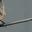
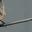
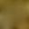
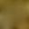
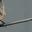
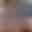
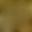

 



The first column represents the target inner 32x32 image, wheras the second column represents the corresponding generated prediction of the inner 32x32 image using the outer frame as input.
| Target | Prediction |
|---|---|
|

|


|